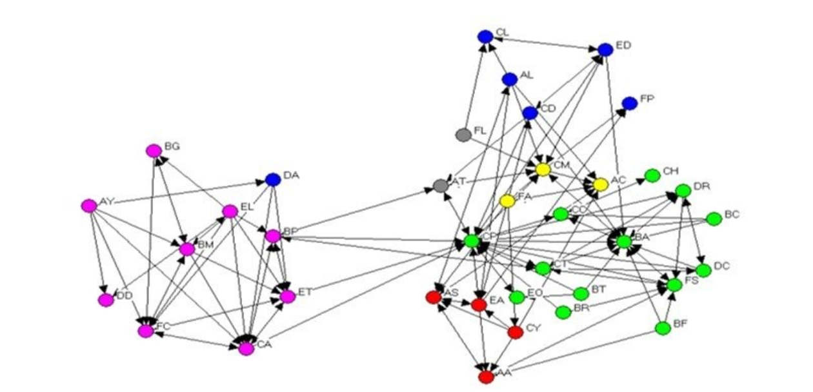

In this project I will take a look at sales data with various attributes such as the price of each item, total revenue, order date, status of the order, order date time,... then perform analysis on them to help answer further questions using Python and its machine learning packages
In this project we build a data pipeline for ETL process and display the data unto a Looker Dashboard for analytics
Technologies Used: GCP: Cloud Storage, Compute Engine, BigQuery, Looker - Python, SQL - Mage.AI for Data Pipeline

In this project we build neural network-based models for:
- CIFAR-10 dataset
- Happy vs Sad

A Social network analysis project in R, covering graph creation, network measures, data import, visualization, and node importance assessment. It provides a comprehensive overview of network analysis techniques and their application to real-world data

A movie recommender system that utilizes both user-based and item-based collaborative filtering approaches
Libraries Used: Numpy, pandas, matplotlib, data preprocessing, seaborn, sklearn
The objective of the project is to gain insights into public opinion on the COVID-19 pandemic by leveraging the Twitter API to extract relevant tweets containing both text and images.
Libraries Used: sklearn, pandas, numpy, seaborn, matplotlib, genism, nltk, spacy, and more